个人简介： wedo实验君-余养强, 数据分析师；热爱生活，热爱写作。微信号：mintel （米口）
现实中由于设备、拍摄技术和拍摄环境等不同的原因，所生成的图像存在色彩偏差，亮度异常（过暗或者过亮）以及颜色暗淡等问题。
色彩增强（Color Enhancement）是通过调节图片的色彩饱和度、亮度、对比度，使得图片色彩更加逼真的技术。根据应用的场景，色彩增强技术可以分为：
低光照图像增强：恢复图像的亮度和色彩度 （Low-Light Image Enhancement）
白平衡调整：在不同光线条件下，恢复图像中原有物体的固有色（White-Balanced Images）
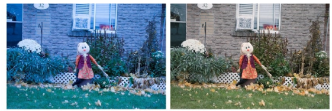
颜色暗淡调整（如老照片，年度久远的动画片）：恢复图像的饱和度，对比度（Image Enhancement）
本文通过介绍色彩增强中的一些基本概念以及传统方法和深度学习算法实践，抛砖引玉。
白平衡和色温有直接的关系。我们用照相机在不同时候拍摄同一个物体时成像的物体颜色是不一样。这就是色温的影响，色温是用定量值（单位是开尔文K）来定义色彩。色温越低颜色越红，色温越高，颜色越蓝。一般情况下，中午的阳光色温为5600K色彩偏白， 烛光色温为1850K，色彩偏红， 日出日落色温3000k色彩偏黄。不同色温下的色彩如下图：
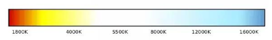
照相机是通过设置与当前光线合适的色温来真实还原物体的色彩。当给出具体的色温值，相机就会认为光源的颜色和色温一致，进而根据这个色温为基准，计算出照片的色彩。因为相机中色彩的还原是以白色为基色，将这个过程称之为白平衡。常见白平衡模式为：自动、日光、多云、阴天、钨丝灯(白炽灯)、闪光灯、荧光灯、色温值等。
不同色温下拍摄的图像差异
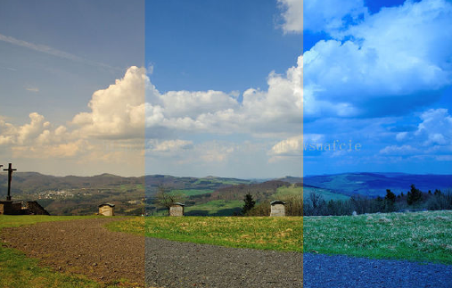
PS中曲线工具是调色的中常用的工具，通过在曲线上锚定不同的点，在改变图像像素值的分布。这里的曲线是SPLine样条曲线。
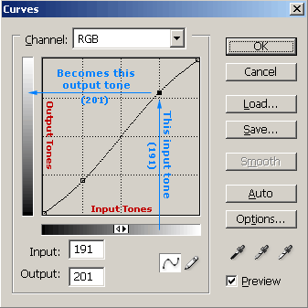
颜色空间又称为彩色空间，是在一个坐标空间对颜色的说明。
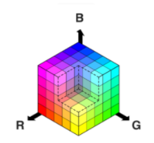
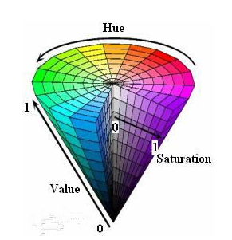
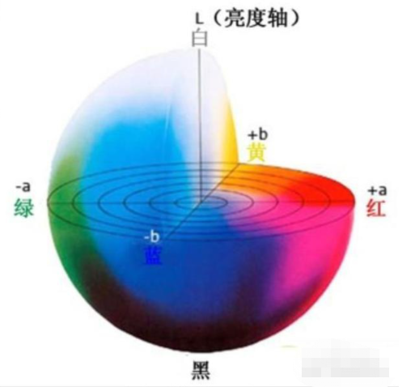
可以看出可以在各个颜色空间的不同维度上分量调整来进行色彩和亮度的调整，达到色彩增强的目的。
retinex理论将物体在我们眼中成像理解成光照在物体的反射结果。从下图可知要想恢复物体本身的颜色R，需要尽可能的减少光照L的影响。
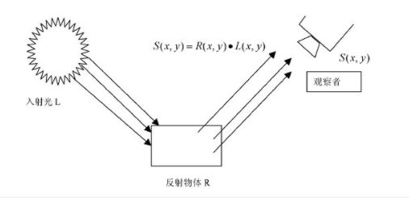
我们做一个简单的数学变换，取log， 光照图像L一般可以估计为平滑的图像空间，可采用不同核函数的高斯模糊来实现。这就是单尺度的retinex算法
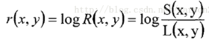
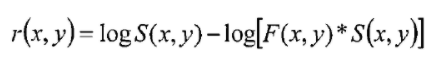
import numpy as np
import cv2
def singleScaleRetinex(img, sigma):
retinex = np.log10(img) - np.log10(cv2.GaussianBlur(img, (0, 0), sigma))
return retinex
在单尺度retinex基础上，针对如何更灵活的估计光照L和保留色彩度，有提出了不同的改进思路：
多尺度的retinex [MSR]： 简单的说每个通道用多个不同尺度的高斯核模糊来求平均
色彩恢复的MSR [MSRCR和MSRCP]
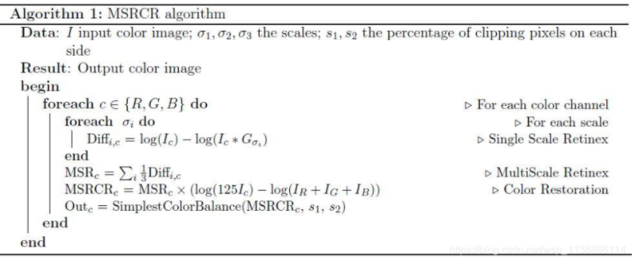
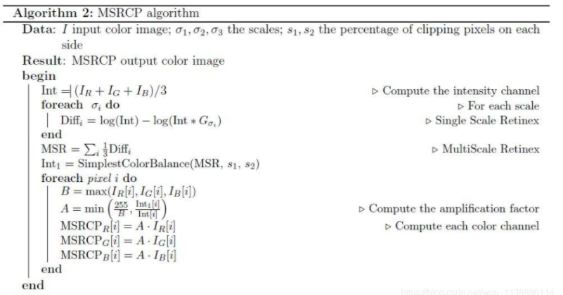
import numpy as np
import cv2
def singleScaleRetinex(img, sigma):
retinex = np.log10(img) - np.log10(cv2.GaussianBlur(img, (0, 0), sigma))
return retinex
def MSR(img, sigma_list):
retinex = np.zeros_like(img)
for sigma in sigma_list:
retinex += singleScaleRetinex(img, sigma)
retinex = retinex / len(sigma_list)
return retinex
def colorRestoration(img, alpha, beta):
img_sum = np.sum(img, axis=2, keepdims=True)
color_restoration = beta * (np.log10(alpha * img) - np.log10(img_sum))
return color_restoration
def simplestColorBalance(img, low_clip, high_clip):
total = img.shape[0] * img.shape[1]
for i in range(img.shape[2]):
unique, counts = np.unique(img[:, :, i], return_counts=True)
current = 0
for u, c in zip(unique, counts):
if float(current) / total < low_clip:
low_val = u
if float(current) / total < high_clip:
high_val = u
current += c
img[:, :, i] = np.maximum(np.minimum(img[:, :, i], high_val), low_val)
return img
def MSRCR(img, sigma_list, G, b, alpha, beta, low_clip, high_clip):
img = np.float64(img) + 1.0
img_retinex = MSR(img, sigma_list)
img_color = colorRestoration(img, alpha, beta)
img_msrcr = G * (img_retinex * img_color + b)
for i in range(img_msrcr.shape[2]):
img_msrcr[:, :, i] = (img_msrcr[:, :, i] - np.min(img_msrcr[:, :, i])) / \
(np.max(img_msrcr[:, :, i]) - np.min(img_msrcr[:, :, i])) * \
255
img_msrcr = np.uint8(np.minimum(np.maximum(img_msrcr, 0), 255))
img_msrcr = simplestColorBalance(img_msrcr, low_clip, high_clip)
return img_msrcr
def MSRCP(img, sigma_list, low_clip, high_clip):
img = np.float64(img) + 1.0
intensity = np.sum(img, axis=2) / img.shape[2]
retinex = multiScaleRetinex(intensity, sigma_list)
intensity = np.expand_dims(intensity, 2)
retinex = np.expand_dims(retinex, 2)
intensity1 = simplestColorBalance(retinex, low_clip, high_clip)
intensity1 = (intensity1 - np.min(intensity1)) / \
(np.max(intensity1) - np.min(intensity1)) * \
255.0 + 1.0
img_msrcp = np.zeros_like(img)
for y in range(img_msrcp.shape[0]):
for x in range(img_msrcp.shape[1]):
B = np.max(img[y, x])
A = np.minimum(256.0 / B, intensity1[y, x, 0] / intensity[y, x, 0])
img_msrcp[y, x, 0] = A * img[y, x, 0]
img_msrcp[y, x, 1] = A * img[y, x, 1]
img_msrcp[y, x, 2] = A * img[y, x, 2]
img_msrcp = np.uint8(img_msrcp - 1.0)
return img_msrcp
可以看出，对于光照的估计其实需要调整许多超参数才能有好的结果。测试图片Adobe-5k
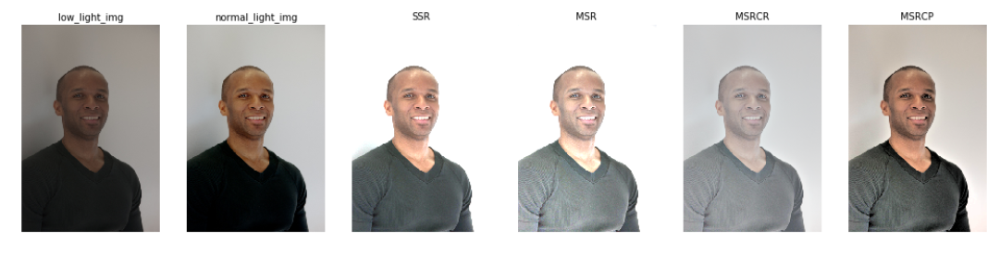
这里讲解一个常用白平衡算法：灰度世界算法； 灰度世界算法基于一个强假设：对于一幅有着大量色彩变化的图像的RGB三个分量的平均值趋于同一灰度值。这样我们对于有色差的图像，计算一个相对于这个灰度值的转换系数，就可以达到白平衡的效果。
这个灰度值可以采用固定值如128，也可以采用RGB通道的均值。
def gray_world_assumes_white_balance(img):
"""
灰度世界假设
:param img: cv2.imread读取的图片数据
:return: 返回的白平衡结果图片数据
"""
B, G, R = np.double(img[:, :, 0]), np.double(img[:, :, 1]), np.double(img[:, :, 2])
B_ave, G_ave, R_ave = np.mean(B), np.mean(G), np.mean(R)
K = (B_ave + G_ave + R_ave) / 3
Kb, Kg, Kr = K / B_ave, K / G_ave, K / R_ave
Ba = (B * Kb)
Ga = (G * Kg)
Ra = (R * Kr)
Ba[Ba > 255] = 255
Ga[Ga > 255] = 255
Ra[Ra > 255] = 255
# print(np.mean(Ba), np.mean(Ga), np.mean(Ra))
dst_img = np.uint8(np.zeros_like(img))
dst_img[:, :, 0] = Ba
dst_img[:, :, 1] = Ga
dst_img[:, :, 2] = Ra
return dst_img
可想而知，如果图片色彩单一，特别是大色块的情况下，即假设不成立的情况，算法的效果不佳。Before测试图片来自网络，侵权请联系
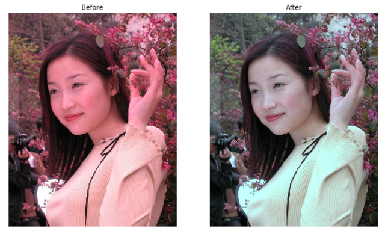
深度学习在图像处理上的有着广泛的应用。在这里介绍两种不同的色彩增强的思路：
其他思路：有基于GAN的方法和基于强化学习的方式
Retinex-net借鉴了Retinex的思想来对低光图像增强的方法，整个网络分为三个部分：
具体见下图
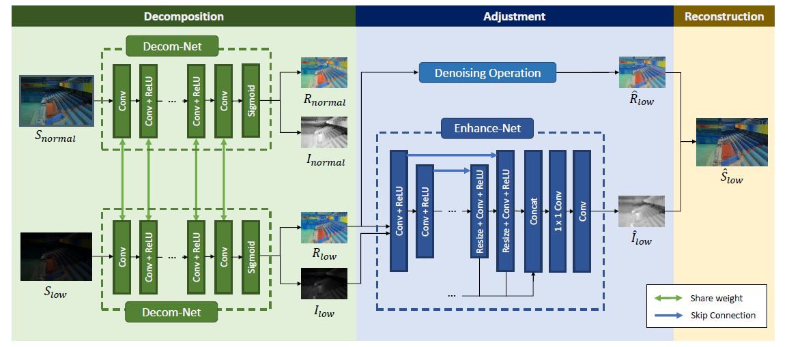
可以看出图中有两个输入（配对的正常图片和低光图片），正常图片主要是为了指导训练网络的作用，整个训练过程需要不断优化三种loss
code传送门
https://github.com/weichen582/RetinexNet 代码是基于tensorflow版本
python main.py \
--use_gpu=1 \
--gpu_idx=0 \
--gpu_mem=0.5 \
--phase=test \
--test_dir=./RetinexNet/data/test/low \
--save_dir=./test \
--decom=0
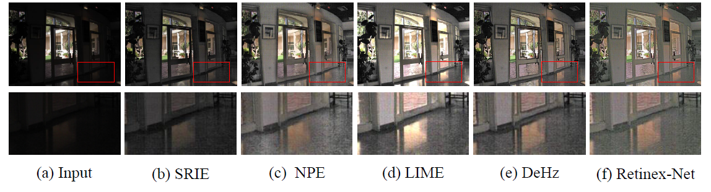
CURL这种思路借鉴了PS中曲线工具的调色方法，将它挪到深度学习框架中。总体框架如下：
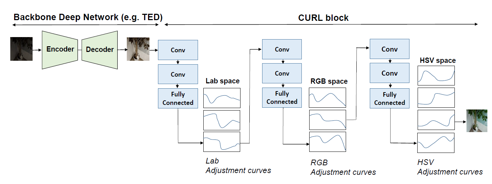
从结构上看
其中TED模块如下：
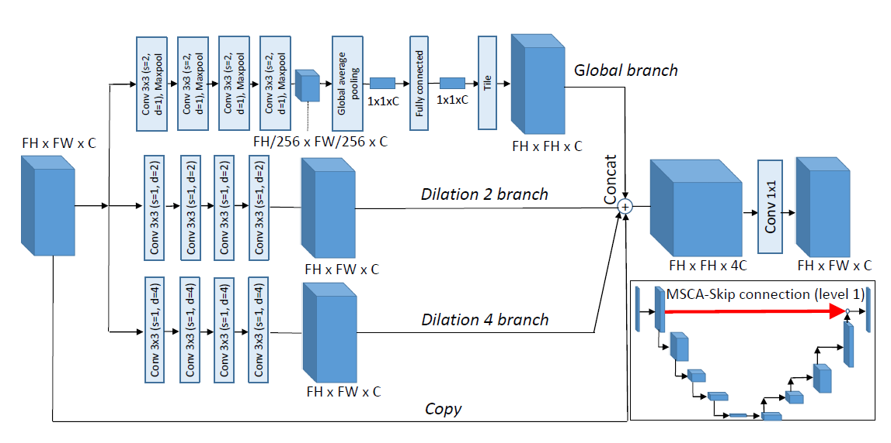
CURL采用了多个颜色空间的loss来控制学习的过程。
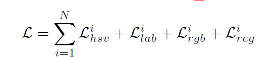
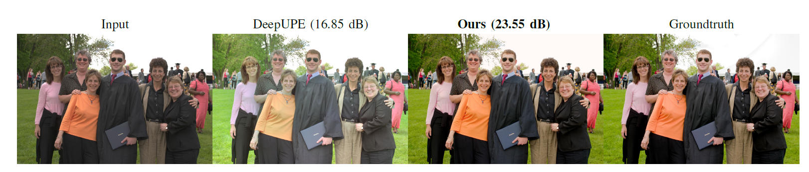
有时候需要构建自己的数据来适应不同亮度和饱和度的应用场景。pytorch提供transforms.ColorJitter方法
import os
import torch
import torchvision
import torchvision.transforms as transforms
import cv2
import numpy as np
import shutil
from PIL import Image
brightness = (0.9, 0.98)
saturation = (0.7, 0.85)
img = Image.open('./data/test.png').convert('RGB')
transform1 = transforms.Compose([
transforms.ColorJitter(brightness=brightness, contrast=0, saturation=saturation, hue=0)
])
process_img = transform1(img)
process_img.save(save_img)
本文介绍色彩增强的概念以及色彩增强的不同应用场景，并分别介绍传统方法和深度学习方法，希望对你有帮助。总结如下：